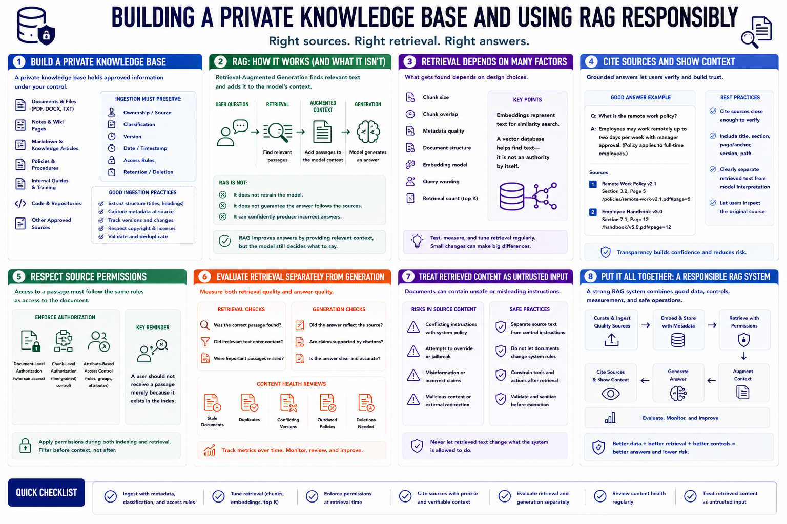

Private Knowledge and Retrieval
Connecting to LMS... Progress: in progress

Narration
A private knowledge base may contain local documents, notes, PDFs, markdown, policies, internal guides, code, or other approved sources. Ingestion should preserve ownership, classification, version, date, and access rules.
Retrieval-augmented generation, or RAG, selects relevant source passages and places them in the model's context. It does not retrain the model or guarantee that the answer follows the sources.
Embeddings represent text for similarity search. Chunk size, overlap, metadata, document structure, embedding model, query wording, and retrieval count affect what is found. A vector database is not an authority by itself.
Grounded answers should cite source context close enough for users to verify. Preserve document title, section, page or anchor, version, and access path. The interface should distinguish retrieved text from model interpretation.
Respect source permissions during indexing and retrieval. A user should not receive a passage merely because it exists in the shared index. Apply document-level or chunk-level authorization where the use case requires it.
Evaluate retrieval separately from generation. Ask whether the correct passage was found, whether irrelevant text entered context, and whether the answer accurately reflected the source. Review stale documents, duplicates, conflicting versions, and deletion.
Retrieved content is untrusted input. Documents may contain instructions that conflict with system policy or attempt to redirect tools. Separate source text from control instructions and constrain any actions that follow retrieval.